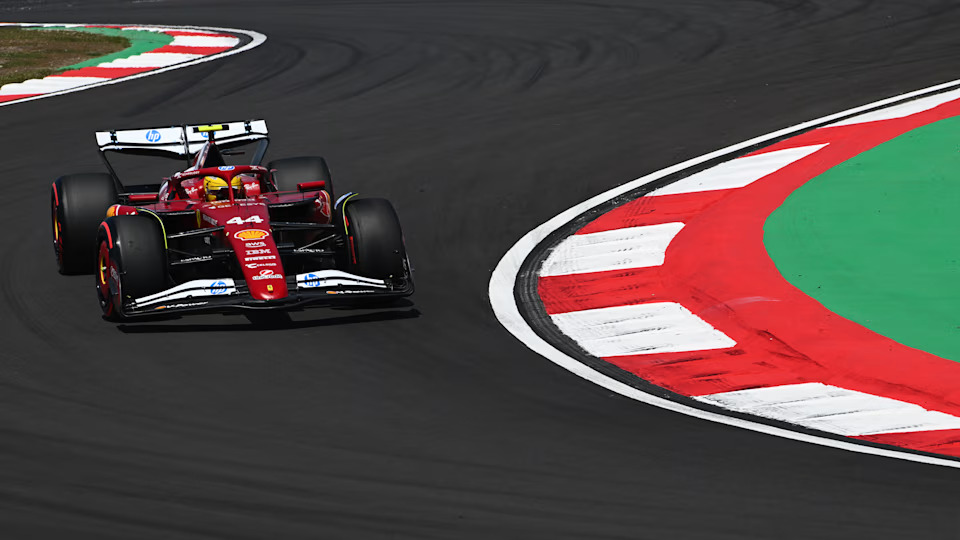

Friday Events
Free Practice
The Chinese Grand Prix weekend got underway with the sole Free Practice session ahead of Sprint Qualifying at the Shanghai International Circuit, with Lando Norris setting the early pace.
On a freshly laid track surface, drivers struggled to get to grips with the layout, with snaps of oversteer prevalent throughout the session - Alex Albon and Charles Leclerc notably running off the track in the early stages.
With 13 minutes remaining, the red flags were shown after Jack Doohan's Alpine came to a halt at Turn 10 as the Australian reported a loss of power steering over the radio. Qualifying simulations after the interruption then saw Lando Norris move to the top by 0.454s from Leclerc and Oscar Piastri, who ran into the gravel at the final corner. Max Verstappen aborted his soft tyre run and finished 16th, with Red Bull team mate Liam Lawson 18th.
George Russell had topped the order for Mercedes on medium tyres, but dropped to fifth in the closing stages.
Sprint Qualifying
Ferrari driver Lewis Hamilton delivered a stunning performance to secure pole position during Sprint Qualifying at the Chinese Grand Prix, narrowly getting the better of Red Bull rival Max Verstappen and McLaren’s Oscar Piastri.
Hamilton posted a time of 1m 30.849s during the decisive SQ3 phase to pip Verstappen to the top spot by 0.018s, with Piastri and the other Ferrari of Charles Leclerc not much further back in an ultra-close session.
Hamilton’s benchmark was a new lap record around the Shanghai International Circuit and, when informed of his pole over the radio, the seven-time World Champion initially could not believe it. “Really?” Hamilton asked with several laughs.
George Russell led the Mercedes charge in fifth position, taking advantage of a scruffy final segment for Lando Norris, who had looked rapid in his McLaren early on, only to make a mistake on his first SQ3 lap and abandon the second.
FORMULA 1 HEINEKEN CHINESE GRAND PRIX 2025
Sprint Qualifying results
| Position | Team Name | Time |
|---|---|---|
| 1 | Lewis Hamilton (Ferrari) | 1:30.849 |
| 2 | Max Verstappen (Red Bull Racing) | 1:30.867 |
| 3 | Oscar Piastri (McLaren) | 1:30.929 |
| 4 | Charles Leclerc (Ferrari) | 1:31.057 |
| 5 | George Russell (Mercedes) | 1:31.169 |
Next up was Kimi Antonelli, around half a second down on more experienced team mate Russell, as Racing Bulls driver Yuki Tsunoda, the Williams of Alex Albon and the lead Aston Martin of Lance Stroll rounded out the top 10 positions.
Fernando Alonso just missed out on a place in SQ3 in the other Aston Martin, while Ollie Bearman bounced back from a challenging debut F1 weekend in Australia to put his Haas 12th over Williams’ Carlos Sainz, Kick Sauber’s Gabriel Bortoleto and Racing Bulls’ Isack Hadjar.
It was another tough session for Red Bull newcomer Liam Lawson, whose struggles at the season opener carried over in a painful SQ1 exit – the New Zealander’s deleted final lap time for exceeding track limits leaving him 20th and last on the Sprint grid.